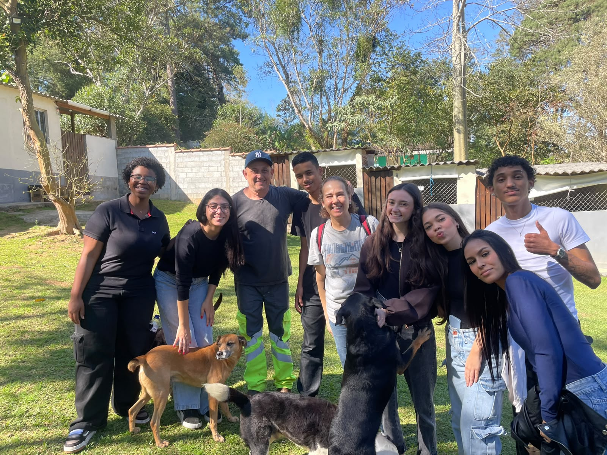
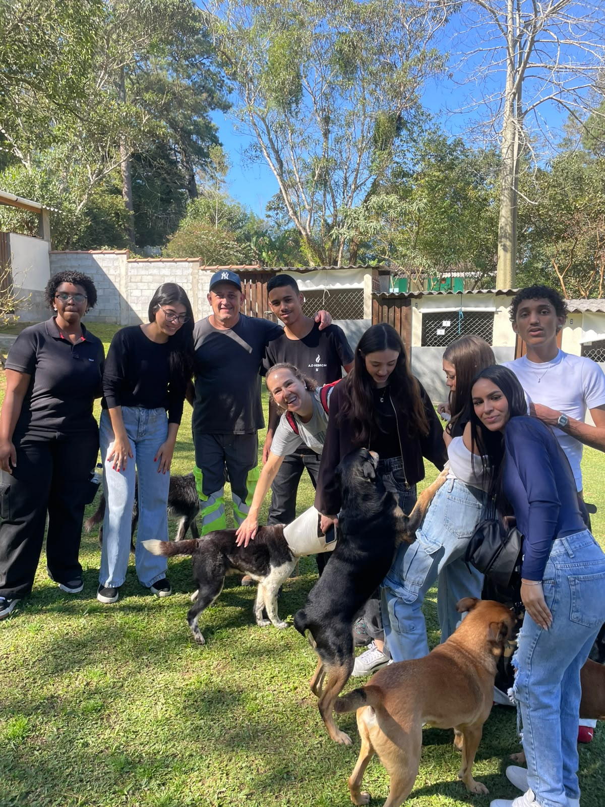

Denunciar
Casos de maus-tratos podem ser registrados em qualquer delegacia, pelo 190 ou pela Delegacia Eletrônica de Proteção Animal (Depa).
Conscientização · Cuidado · Prevenção
Animais domésticos e urbanos fazem parte do nosso dia a dia. Este site reúne o que aprendemos sobre as leis de proteção animal e sobre o trabalho das ONGs que cuidam, resgatam e previnem.

Casos de maus-tratos podem ser registrados em qualquer delegacia, pelo 190 ou pela Delegacia Eletrônica de Proteção Animal (Depa).
ONGs resgatam, tratam, castram e encaminham animais para adoção, muitas vezes com poucos recursos.
Informação, castração, vacinação e guarda responsável reduzem abandono e sofrimento.
Legislação
Um panorama da legislação do Estado de São Paulo, a partir de matéria da Assembleia Legislativa (Alesp, 25/02/2022).
Desde 2005, São Paulo tem uma lei estadual específica de defesa animal, com normas para a preservação da fauna silvestre e a proteção dos animais domésticos. Também criou o Programa de Proteção à Fauna Silvestre, que orienta os municípios a integrar fiscalização e manejo, firmar parcerias com universidades, ONGs e iniciativa privada e combater o tráfico.
O código trata de habitat, pesca, transporte, criação, abate e do uso de animais em experimentos e pesquisas científicas.
Acrescentou ao código o Programa de Proteção e Bem-Estar dos Animais Domésticos, com novas normas para essas espécies. Autoria dos deputados Delegado Bruno Lima (PSL) e Vinícius Camarinha (PSB).
Incluiu ainda o Registro Único de Tutor, ainda a ser regulamentado: um documento de identificação do dono do animal, que poderá ser usado para responsabilizar quem comete maus-tratos.
Proíbe a soltura de fogos de artifício com estampido no Estado, para preservar pessoas e animais sensíveis a ruídos altos. Autoria de Bruno Ganem (Podemos) e Maria Lúcia Amary (PSDB).
“A comemoração de alguém não pode causar sofrimento em outras pessoas e animais.” — Bruno Ganem
De autoria de Bruno Ganem, obriga os condomínios residenciais a informar as autoridades sobre casos de maus-tratos contra animais.
“Precisamos conscientizar as pessoas a criarem um ambiente seguro para todos os bichos.”
Os municípios são responsáveis pelo controle de zoonoses, por meio de vacinação e controle de reprodução de cães e gatos. No Estado, isso parte da Coordenadoria de Defesa e Saúde Animal (CDSA), que repassou R$ 7,8 milhões aos municípios entre 2020 e 2021 para castração e microchipagem. Em 2022, o programa “Meu Pet” prevê levar clínicas veterinárias aos municípios, e a CDSA, com a Prodesp, trabalha em um cadastro estadual de cães e gatos.
A Secretaria de Segurança Pública atua nas ocorrências. Desde 2016, a Delegacia Eletrônica de Proteção Animal (Depa) recebe denúncias pela internet: foram 17.962 em 2021, alta de 16,05% sobre o ano anterior. Entre 2019 e 2021, as delegacias especializadas registraram 291 ocorrências e 653 apreensões.
Você também pode registrar em qualquer delegacia ou ligar para o 190.
Em 2022, o Dia Estadual da Proteção Animal e do Protetor Animal, criado por lei aprovada pela Alesp, completou dez anos, valorizando quem luta pela causa. Fonte: Assembleia Legislativa do Estado de São Paulo.
Nossa pesquisa
Nossa turma iniciou as atividades e foi apresentada ao curso. Começamos ali a capacitação e a preparação para o mercado de trabalho, desenvolvendo nossas habilidades e compreendendo nossa responsabilidade cidadã.
A turma estava dividida em dois grupos com temáticas distintas, sendo uma delas os maus-tratos aos animais. Com a redução no número de alunos, optou-se por unificar a turma em um único projeto.
Escolhemos continuar com o tema porque os animais domésticos e urbanos fazem parte do nosso dia a dia. Nosso objetivo é promover a conscientização e apoiar quem se dedica diretamente a essa causa.
Visitamos a ONG para entender a dinâmica de funcionamento da instituição, os desafios enfrentados no dia a dia e o impacto de sua missão.
Conheça a ONG Cão sem Dono →Registros
Momentos da turma durante a visita à ONG.
